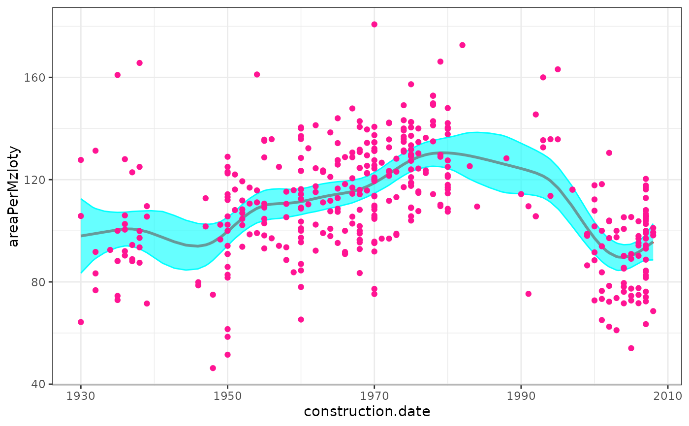
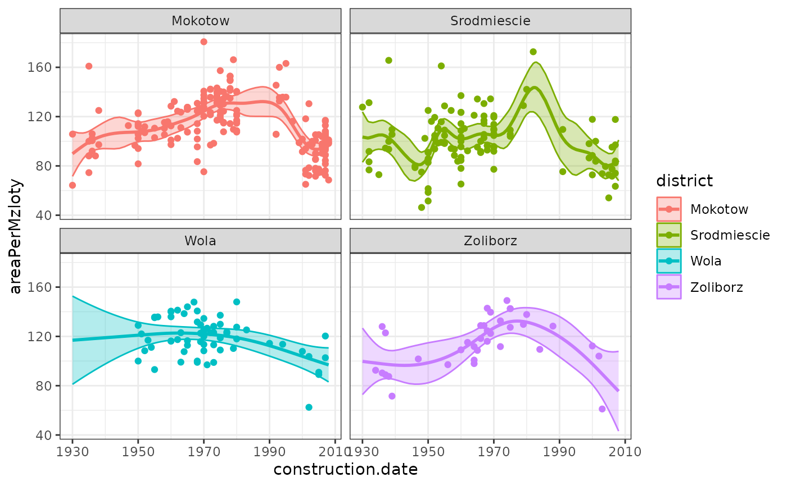
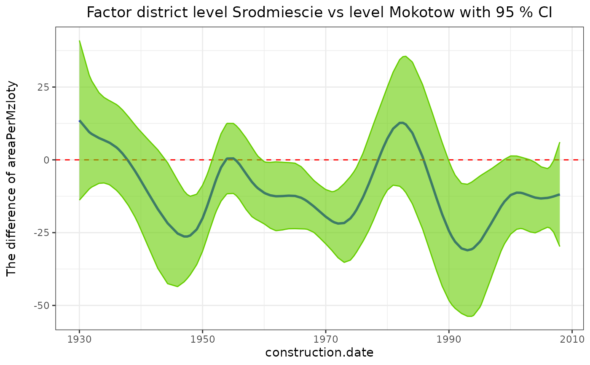
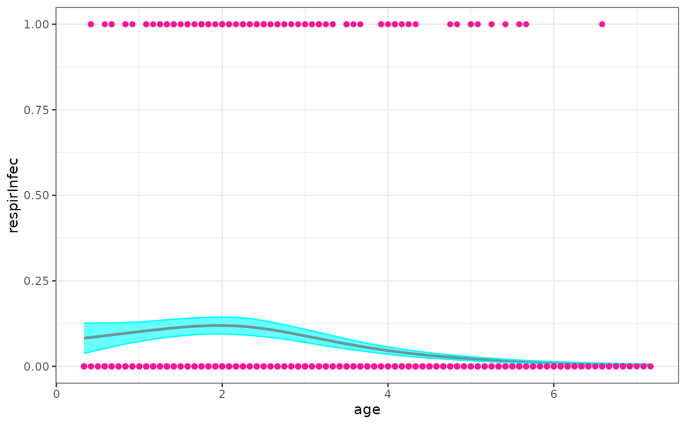
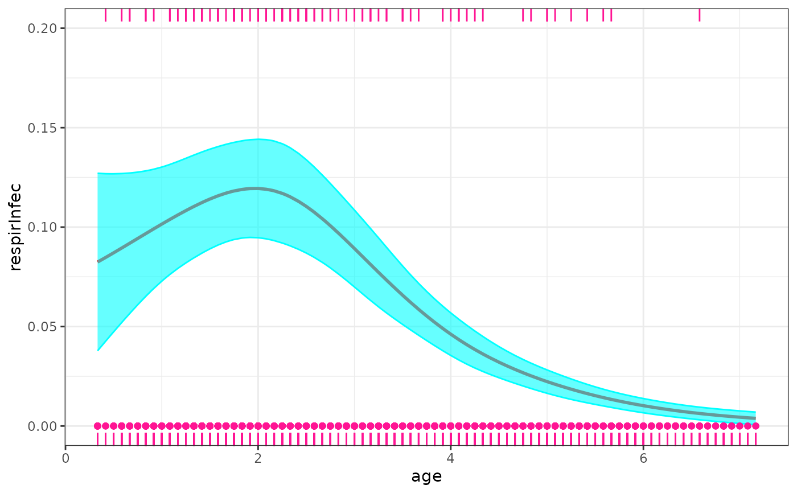

Fit a semi parametric model based on lme4 ecosystem including lmer, glmer and glmer.nb.
Usage
semireg(formula, data, family = NULL, ngbinomial=FALSE, REML = TRUE,
smoothZ = list(), ncenter=TRUE, nscale=FALSE, resp_scale=FALSE,
control = lmerControl(optimizer="bobyqa"), start = NULL,
verbose = FALSE, drop.unused.levels=TRUE, subset, weights,
offset, contrasts = NULL, prt=TRUE, predict_info=TRUE, ...)Arguments
- formula
A two-sided linear formula object describing both the fixed-effects and random-effects part of the model, with the response on the left of a ~ operator and the terms, separated by + operators, on the right. Random-effects terms are distinguished by vertical bars ("|") separating expressions for design matrices from grouping factors.
- data
A data frame or list containing the model response variable and covariates required by the formula. By default the variables are taken from environment(formula and smoothZ), typically the environment from which semireg is called.
- family
A GLM family, see glm and family.
- ngbinomial
Logical scalar - Should a negative binomial GLMMs be used? .
- REML
Logical scalar - Should the estimates be chosen to optimize the REML criterion (as opposed to the log-likelihood)?
- smoothZ
A list includes a set of smooth Z matrixs (called 'smooth term') used in the mixed effects model, the name of 'smooth term' should be different any variables in the model, each 'smooth term' is the result of function
smZ. e.g. smoothZ=list(sm1=smZ(x1), sm2=smZ(x2, by=f1), sm3=smZ(x3, by=f2, group=TRUE), ...) where 'sm1' to 'sm3' should be new variable names in thedata, and x1 to x3 are covariates, and f1, f2 are factors.- ncenter
Logical scalar - Should the numeric predictors to be centered or not?
- nscale
Logical scalar - Should the numeric predictors to be scaled or not?
- resp_scale
Logical scalar - Should the response be involved in the scaling action or not?
- control
A list (of correct class, resulting from lmerControl() or glmerControl() respectively) containing control parameters, including the nonlinear optimizer to be used and parameters to be passed through to the nonlinear optimizer, see the *lmerControl documentation for details.
- start
Starting value list as used by lmer or glmer.
- verbose
Passed on to fitting lme4 fitting routines.
- drop.unused.levels
By default unused levels are dropped from factors before fitting. For some smooths involving factor variables you might want to turn this off. Only do so if you know what you are doing.
- subset
An optional expression indicating the subset of the rows of data that should be used in the fit. This can be a logical vector, or a numeric vector indicating which observation numbers are to be included, or a character vector of the row names to be included. All observations are included by default.
- weights
An optional vector of <e2><80><98>prior weights<e2><80><99> to be used in the fitting process. Should be NULL or a numeric vector.
- offset
This can be used to specify an a priori known component to be included in the linear predictor during fitting. This should be NULL or a numeric vector of length equal to the number of cases. One or more offset terms can be included in the formula instead or as well, and if more than one is specified their sum is used. See model.offset.
- contrasts
An optional list. See the contrasts.arg of model.matrix.default.
- prt
Logical scalar - Should the info to be print on screen in the middle of the process or not?
- predict_info
Logical scalar - Should provide the info for function semipred or not?
- ...
Further arguments for passing on to model setup routines.
Value
- semer
A mer model used in the fitting.
- data
A data.frame with generated variables in the fitting.
- fomul_vars
Name of variables in the formula of semireg model.
- sm_vars
Name of variables in the smoothZ list.
- smoothZ_call
A call used to produce smooth terms in the fitting.
- knots_lst
Knots used in each smooth term in the fitting.
- range_lst
Range of covariate used in each smooth term in the fitting.
- cov_lst
Covariance matrix list for each smooth term.
- u_lst
Random effects list for each smooth term.
- type_lst
Smooth type list of smooth terms.
- CovMat
Covariance matrix for all smooth terms.
- Cov_ind
Covariance matrix index for each smooth term.
- Cov_indN
Covariance matrix index for each smooth term when
group=TRUEinsmoothZargument.- df
Degree of freedom of all random terms.
- lmerc
Call used in the mer model in the fitting.
Details
A semi parametric model can be parameterized as a linear (or generalized linear) mixed model in which its random effects are smooth functions of some covariates (named <e2><80><98>smooth term<e2><80><99>). semireg follows the approach suggested by Wand and Ormerod (2008) and represents the 'smooth term' using O'Sullivan-type of Z.
References
Wand, M.P. and Ormerod, J.T. (2008). On semiparametric regression with O'Sullivan penalized splines. Australian and New Zealand Journal of Statistics. 50, 179-198.
Examples
library(predictmeans)
if (requireNamespace("HRW", quietly = TRUE)) {
data(WarsawApts, package = "HRW")
fit1 <- semireg(areaPerMzloty ~ construction.date,
smoothZ=list(
grp=smZ(construction.date, k=25)
),
data = WarsawApts)
sp_out1 <- semipred(fit1, "construction.date", "construction.date")
WarsawApts$district <- factor(WarsawApts$district)
fit2 <- semireg(areaPerMzloty ~ construction.date*district, resp_scale = TRUE,
smoothZ=list(group=smZ(construction.date, k=15,
by = district, group=TRUE)),
data=WarsawApts)
sp_out2_1 <- semipred(fit2, "district", "construction.date")
sp_out2_2 <- semipred(fit2, "district", "construction.date", contr=c(2,1))
}
#> boundary (singular) fit: see help('isSingular')
#> Linear mixed model fit by REML ['semerLmerTest']
#> Formula: areaPerMzloty ~ construction.date + (1 | grp)
#> Data: WarsawApts
#> REML criterion at convergence: 3544.905
#> Random effects:
#> Groups Name Std.Dev.
#> grp (Intercept) 1.191
#> Residual 17.812
#> Number of obs: 409, groups: grp, 27
#> Fixed Effects:
#> (Intercept) construction.date
#> 109.38694 0.06692

#> Warning: unable to evaluate scaled gradient
#> Warning: Model failed to converge: degenerate Hessian with 3 negative eigenvalues
#> See ?lme4::convergence and ?lme4::troubleshooting.
#> Linear mixed model fit by REML ['semerLmerTest']
#> Formula: areaPerMzloty ~ construction.date * district + (1 | group.Mokotow) +
#> (1 | group.Srodmiescie) + (1 | group.Wola) + (1 | group.Zoliborz)
#> Data: WarsawApts
#> REML criterion at convergence: 3501.211
#> Random effects:
#> Groups Name Std.Dev.
#> group.Mokotow (Intercept) 1.0341
#> group.Srodmiescie (Intercept) 2.9071
#> group.Wola (Intercept) 0.1686
#> group.Zoliborz (Intercept) 0.5913
#> Residual 16.4101
#> Number of obs: 409, groups:
#> group.Mokotow, 17; group.Srodmiescie, 17; group.Wola, 17; group.Zoliborz, 17
#> Fixed Effects:
#> (Intercept) construction.date
#> 1.02680 0.09596
#> districtSrodmiescie districtWola
#> -9.67371 2.89971
#> districtZoliborz construction.date:districtSrodmiescie
#> -5.35943 -0.21369
#> construction.date:districtWola construction.date:districtZoliborz
#> -0.35515 -0.17735


# \donttest{
if (requireNamespace("HRW", quietly = TRUE)) {
data(indonRespir, package = "HRW")
fit3 <- semireg(respirInfec ~ age+vitAdefic + female + height
+ stunted + visit2 + visit3 + visit4 + visit5 + visit6+(1|idnum),
smoothZ=list(
grp=smZ(age)
),
family = binomial,
data = indonRespir)
sp_out3 <- semipred(fit3, "age", "age")
library(ggplot2)
print(sp_out3$plt +
geom_rug(data = subset(indonRespir, respirInfec==0), sides = "b", col="deeppink") +
geom_rug(data = subset(indonRespir, respirInfec==1), sides = "t", col="deeppink") +
coord_cartesian(ylim = c(0, 0.2)))
}
#> Warning: Model failed to converge with max|grad| = 0.0987607 (tol = 0.002, component 1)
#> See ?lme4::convergence and ?lme4::troubleshooting.
#> Generalized linear mixed model fit by maximum likelihood (Laplace
#> Approximation) [glmerMod]
#> Family: binomial ( logit )
#> Formula: respirInfec ~ age + vitAdefic + female + height + stunted + visit2 +
#> visit3 + visit4 + visit5 + visit6 + (1 | idnum)
#> Data: indonRespir
#> AIC BIC logLik -2*log(L) df.resid
#> 673.9676 740.1386 -323.9838 647.9676 1187
#> Random effects:
#> Groups Name Std.Dev.
#> idnum (Intercept) 0.7939
#> grp (Intercept) 0.4285
#> Number of obs: 1200, groups: idnum, 275; grp, 8
#> Fixed Effects:
#> (Intercept) age vitAdefic female height stunted
#> -3.157600 -0.500260 0.666185 -0.505902 -0.033005 0.454806
#> visit2 visit3 visit4 visit5 visit6
#> -1.107208 -0.572608 -1.275791 0.473009 -0.004677


# }